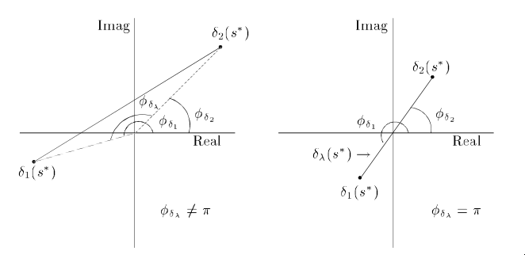

Пусть
\[
\begin{aligned}
P(s) &= p_0 + p_1 s + \cdots + p_n s^n
= p_n \prod_{j=1}^m (s - s_j)^{t_j}, \quad p_n \neq 0, \\
Q(s) &= (p_0 + \varepsilon_0) + (p_1 + \varepsilon_1) s + \cdots +
(p_n + \varepsilon_n) s^n.
\end{aligned}
\]
Рассмотрим окружность $C_k$ радиуса $r_k$ с центром в точке $s_k$
— корне многочлена $P(s)$ кратности $t_k$. Предположим, что
\[
0 \lt r_k \lt \min \abs{s_k - s_j}, \quad
j = 1, 2, \dots, k-1, k+1, \dots, m.
\]
Тогда существует $\varepsilon \gt 0$ такой, что если
\[
\abs{\varepsilon_i} \leqslant \varepsilon \quad i = \overline{0, n},
\]
то у многочлена $Q(s)$ ровно $t_k$ корней лежат внутри $C_k$.
$P(s) \not\equiv 0$ и непрерывен на компакте $C_k$, следовательно
\[
\exists \delta_k \gt 0:
\quad \abs{P(s)} \geqslant \delta_k \gt 0
\quad \forall s \in C_k.
\]
Рассмотрим вспомогательный многочлен
\[
R(s) = \varepsilon_0 + \varepsilon_1 s
+ \cdots + \varepsilon_n s^n.
\]
Если $s \in C_k$, то
\[
\begin{aligned}
\abs{R(s)}
&\leqslant
\sum_{j=0}^n \abs{\varepsilon_j} \abs{s^j} \\
&\leqslant
\sum_{j=0}^n \abs{\varepsilon_j}
\paren{\abs{s - s_k} + \abs{s_k}}^j \\
&\leqslant
\varepsilon \underbrace{
\sum_{j=0}^n \paren{r_k + \abs{s_k}}^j
}_{M_k}.
\end{aligned}
\]
Таким образом, если выбрать $\varepsilon$ так, чтобы
\[
\varepsilon \lt \frac{\delta_k}{M_k},
\]
то
\[
\abs{R(s)} \lt \abs{P(s)} \quad s \in C_k,
\]
откуда, в силу теоремы Руше, у многочленов $P(s)$ и
$Q(s) = P(s) + R(s)$ одинаковое количество нулей внутри $C_k$.
Учитывая, что $r_k$ выбран так, чтобы у $P(s)$ внутри $C_k$ был
ровно один корень кратности $t_k$, заключаем, что у $Q(s)$ ровно
$t_k$ корней внутри $C_k$.
Выберем $m$ попарно непересекающихся шаров $C_1, \dots, C_m$ с
центрами в $s_1, \dots, s_m$ сооответственно. Последовательно
применяя предыдущую теорему, всегда можно выбрать
$\varepsilon \gt 0$ так, что для любого набора
$\set{ \varepsilon_0, \dots, \varepsilon_n }$ такого, что
\[
\abs{\varepsilon_i} \leqslant \varepsilon,
\quad i = \overline{1, n},
\]
у многочлена $Q(s)$ ровно $t_j$ корней попадают в шар $C_j$.
Множество полиномов степени $n$, корни которых лежат в открытом
множестве $\mathcal{O}$, само является открытым множеством.
Пусть $S \subset \mathbb{C}$ — произвольное открытое множество,
$\mathcal{U} = \mathbb{C} \setminus S$ — его дополнение со
внутренностью $\mathcal{U}^\circ$. Известно, что
\[
S \cup \partial S \cup \mathcal{U}^\circ = \mathbb{C}, \qquad
S \cap \mathcal{U}^\circ = S \cap \partial S
= \partial S \cap \mathcal{U}^\circ = \varnothing.
\]
Также будем предполагать, что $S, \partial S, \mathcal{U}^\circ \neq
\varnothing$.
Рассмотрим $P(\lambda, s)$ — семейство полиномов
-
фиксированной степени $n$;
-
непрерывное по $\lambda$ на промежутке $I = [a; b]$.
Другими словами, каждый элемент множества $P(\lambda, s)$ может быть
записан в виде
\[
P(\lambda, s) = p_0(\lambda) + p_1(\lambda) s
+ \cdots + p_n(\lambda) s^n,
\]
где $p_0(\lambda), \dots, p_n(\lambda) \in C[a;b]$ и
$p_n(\lambda) \not\equiv 0$. Пользуясь вторым следствием предыдущей
теоремы, можно сделать вывод, что если для какого-нибудь $t \in I$
корни полинома $P(t, s)$ лежат в открытом множестве $S$, то существует
$\alpha \gt 0$ такое, что
\[
\forall t' \in (t - \alpha; t + \alpha) \cap I
\]
корни $P(t', s)$ также лежат внутри $S$.
(Boundary Crossing Theorem).
Если все корни $P(a, s)$ лежат в $S$, а хотя бы один корень
$P(b, s)$ лежит в $\mathcal{U}$, то существует $\rho \in (a; b]$
такой, что:
-
корни $P(\rho, s)$ лежат в $S \cup \partial S$;
-
по крайней мере один из корней $P(\rho, s)$ лежит на
$\partial S$.
Обозначим за $E \subset (a; b]$ множество всех чисел
$t \in (a; b]$ таких, что
\[
\forall t' \in (a; t)
\quad \text{корни } P(t', s) \text{ лежат в } S.
\]
По условию теоремы корни $P(a, s)$ лежат в $S$, поэтому (в силу
следствия 2 предыдущей теоремы) существует $\alpha \gt 0$ такое,
что
\[
\forall t' \in [a; a + \alpha) \cap I
\quad \text{корни } P(t', s) \text{ лежат в } S.
\]
Отсюда следует, что $E \neq \varnothing$.
Более того, из определения $E$ следует, что если $t_2 \in E$, то
\[
\forall t_1: a \lt t_1 \lt t_2 \implies t_1 \in E.
\]
Значит, $E$ является промежутком, а если
\[
\rho := \sup\limits_{t \in E} t,
\]
то $E = (a; \rho]$.
Рассмотрим многочлен $P(\rho, s)$.
-
Существует по крайней мере один его корень, не принадлежащий
$S$.
От противного: пусть все корни многочлена $P(\rho, s)$ лежат
в $S$. Тогда:
-
$\rho \lt b$ — следует из условия теоремы;
-
$\exists \alpha \gt 0$ такое, что $\rho + \alpha \lt b$
и
\[
\forall t' \in (\rho - \alpha; \rho + \alpha) \cap I
\quad \text{корни } P(t', s) \text{ лежат в } S,
\]
то есть существовало бы число $\beta \gt \rho$,
принадлежащее $E$, что противоречило бы определению
$\rho$ как точной верхней границы.
-
Ни один из его корней не принадлежит $\mathcal{U}^\circ$.
От противного: пусть по крайней мере один из корней
$P(\rho, s)$ принадлежит $\mathcal{U}^\circ$. Так как
$\mathcal{U}^\circ$ — открытое множество, из следствия
2 предыдущей теоремы следует, что существует $\alpha \gt 0$
такое, что
\[
\forall t' \in (\rho - \alpha; \rho + \alpha) \cap I
\quad \text{по крайней мере один корень } P(t', s)
\text{ лежит в } \mathcal{U}^\circ,
\]
что противоречило бы тому факту, что для достаточно малых
$\varepsilon \gt 0$ число $\rho - \varepsilon \in E$.
Таким образом, можно сделать вывод, что все корни $P(\rho, s)$
лежат в $S \cup \partial S$, и по крайней мере один из этих корней
лежит на $\partial S$.
Пусть $\set{ P_n(s) }$ — последовательность устойчивых
многочленов ограниченной степени. Если эта последовательность
сходится к некоторому многочлену $Q(s)$, то все корни $Q(s)$ лежат в
$S \cup \partial S$.
Из условия теоремы следует, что существует $N \in \mathbb{N}$
такое, что $\degree[P_n] \leqslant N$ для всех $n \in \mathbb{N}$.
Таким образом, мы можем каждый многочлен последовательности
представить в виде
\[
P_n(s) = p_{0,n} + p_{1,n} s + \cdots + p_{N,n} s^N.
\]
Так как последовательность сходится к $Q(s)$, то
$\degree [Q(s)] \leqslant N$, поэтому его можно записать в виде
\[
Q_n(s) = q_{0} + q_{1} s + \cdots + q_{N} s^N.
\]
Более того,
\[
\lim_{n \to +\infty} p_{k,n} = q_k, \quad k = \overline{0, N}.
\]
Предположим, что корень $s^*$ многочлена $Q(s)$ принадлежит
$\mathcal{U}^\circ$. Так как $\mathcal{U}^\circ$ открыто,
существует окрестность $B_r(s^*)$ точки $s^*$ радиуса $r$,
полностью лежащая в $\mathcal{U}^\circ$. Из
теоремы следует, что
существует $\varepsilon \gt 0$ такой, что если
$\abs{\varepsilon_i} \leqslant \varepsilon, \; i=\overline{0,N}$,
то у многочлена
\[
(q_0 + \varepsilon_0) + (q_1 + \varepsilon_1) s
+ \cdots + (q_N + \varepsilon_N) s^N
\]
по крайней мере один из корней лежит в
$B_r(s^*) \subset \mathcal{U}^\circ$. В силу сходимости
коэффициентов
\[
\exists n_0 \gt 0: \quad \forall n \geqslant n_0 \qquad
\abs{p_{k,n} - q_k} \lt \varepsilon, \quad k = \overline{0, N},
\]
но отсюда следует, что у многочлена
\[
(q_0 + p_{0,n} - q_0) + (q_1 + p_{1,n} - q_1) s
+ \cdots + (q_N + p_{N,n} - q_N) s^N = P_n(s)
\]
по крайней мере один корень лежит в
$B_r(s^*) \subset \mathcal{U}^\circ$, то есть $P_n(s)$ неустойчив,
что противоречит условию теоремы.
Принцип исключения нуля
Рассмотрим семейство многочленов, коэффициенты которых
непрерывно зависят от параметра
$\bvec{p} \in \Omega \subset \mathbb{R}^l$:
\[
\Delta(s) := \set{ \delta(s, \bvec{p}): \bvec{p} \in \Omega }.
\]
Требуется по заданной области устойчивости $S$ проверить, содержит ли
семейство $\Delta(s)$ неустойчивый многочлен.
Предположим, что семейству принадлежит по крайней мере один устойчивый
многочлен $\delta(s, \bvec{p}_a)$, а также что все многочлены этого
семейства имеют одинаковую степень. Тогда если $\delta(s, \bvec{p}_b)$
— неустойчивый многочлен, то из BCT следует,
что на любом непрерывном пути из $\bvec{p}_a$ в $\bvec{p}_b$ найдётся
точка $\bvec{p}_c$ такая, что у многочлена $\delta(s, \bvec{p}_c)$ по
крайней мере один корень будет принадлежать границе области
устойчивости $\partial S$. Если $\Omega$ — связное множество, и
$\bvec{p}_b \in \Omega$, то $\bvec{p}_c \in \Omega$. В этом случае
наличие в $\Delta(s)$ неустойчивых многочленов эквивалентно наличию в
нём многочленов с корнями на границе области устойчивости.
Если $s^0$ — корень некоторого многочлена семейства, значит,
\[
\exists \bvec{p} \in \Omega: \quad \delta(s^0, \bvec{p}) = 0,
\]
то есть $0 \in \Delta(s^0)$. Отсюда следует, что если семейству
принадлежит многочлен с корнями на границе области устойчивости, то
\[
\exists s^* \in \partial S: \quad 0 \in \Delta(s^*).
\]
Этот факт может быть сформулирован в виде теоремы.
(Принцип исключения нуля).
Рассмотрим семейство многочленов
\[
\Delta(s) := \set{ \delta(s, \bvec{p}): \bvec{p} \in \Omega }.
\]
постоянной степени, содержащее по крайней мере один устойчивый
многочлен, где $\Omega \subset \mathbb{R}^l$ — связное
множество. Тогда для устойчивости всего семейства многочленов
необходимо и достаточно, чтобы
\[
0 \not\in \Delta(s^*) \quad \forall s^* \in \partial S.
\]
Свойства гурвицевых многочленов
Многочлен
\[
P(s) = p_0 + p_1 s + \cdots + p_n s^n
\]
называют гурвицевым, если все его корни лежат в левой
комплексной полуплоскости.
Свойства гурвицевых многочленов:
-
Если коэффициенты гурвицева многочлена $P(s)$ вещественны, то они
ненулевые, одинакового знака.
Этот факт следует из того, что любой вещественный многочлен
можно представить в виде произведения многочленов первой и
второй степени, для которых этот факт очевидным образом
выполняется.
Более формально: факт доказывается по мат. индукции.
-
Если $P(s)$ — гурвицев многочлен степени $n$, то
$\arg[P(j\omega)]$ (фаза многочлена $P(j\omega)$) —
непрерывная строго возрастающая функция. Более того,
\[
\arg[P(+j\infty)] - \arg[P(-j\infty)] = n\pi.
\]
Так как $P(s)$ — гурвицев, его можно представить в виде
\[
P(s) = p_n \prod_{i=1}^n (s - s_i),
\]
где $s_i = a_i + j b_i, \; a_i \lt 0$. Тогда
\[
\begin{aligned}
\arg[P(j\omega)]
&= \arg[p_n] + \sum_{i=1}^n \arg[j\omega - a_i - jb_i] \\
&= \arg[p_n]
+ \sum_{i=1}^n \arctg\left[ \frac{\omega - b_i}{-a_i} \right],
\end{aligned}
\]
следовательно, $\arg[P(j\omega)]$ представляет собой сумму
константы и $n$ непрерывных возрастающих функций. Более того,
каждая из этих $n$ функций изменяется от $-\frac{\pi}{2}$ до
$\frac{\pi}{2}$ при изменении $\omega$ от $-\infty$ до
$+\infty$.
Теорема Эрмита-Билера
Рассмотрим вещественный многочлен
\[
P(s) = p_0 + p_1 s + \cdots + p_n s^n.
\]
Введём обозначения для чётной и нечётной составляющих:
\[
\begin{aligned}
P^{\text{even}}(s) &:= p_0 + p_2 s^2 + \cdots, \\
P^{\text{odd}}(s) &:= p_1 s + p_3 s^3 + \cdots.
\end{aligned}
\]
Рассмотрим
\[
\begin{aligned}
P^e(\omega) &:= P^{\text{even}}(j\omega) = p_0 - p_2\omega^2 +
p_4\omega^4 - \cdots, \\
P^o(\omega) &:= \frac{P^{\text{odd}}(j\omega)}{j\omega} =
p_1 - p_3 \omega^2 + p_5 \omega^4 - \cdots.
\end{aligned}
\]
Прежде всего отметим, что $P^e(\omega)$ и $P^o(\omega)$ — чётные
функции, поэтому их корни будут симметричны относительно начала
координат.
Говорят, что многочлен $P(s)$ обладает
свойством перемежаемости, если выполненны следующие условия:
-
если степень многочлена чётная (то есть $n = 2m,\; m \in
\mathbb{N}$), то
-
$p_{2m}$ и $p_{2m-1}$ одного знака;
-
корни многочленов $P^e(\omega)$ и $P^o(\omega)$
вещественные и различные; причём $m$ положительных корней
$P^e(\omega)$ перемежаются с $m-1$ положительным корнем
$P^o(\omega)$ следующим образом:
\[
0 \lt \omega_{e,1} \lt \omega_{o,1} \lt \omega_{e,2} \lt
\cdots
\lt \omega_{e,m-1} \lt \omega_{o,m-1} \lt \omega_{e,m};
\]
-
если степень многочлена нечётная (то есть $n = 2m+1,\; m \in
\mathbb{N}$), то
-
$p_{2m+1}$ и $p_{2m}$ одного знака;
-
корни многочленов $P^e(\omega)$ и $P^o(\omega)$
вещественные и различные; причём $m$ положительных корней
$P^e(\omega)$ перемежаются с $m$ положительными корнями
$P^o(\omega)$ следующим образом:
\[
0 \lt \omega_{e,1} \lt \omega_{o,1} \lt \omega_{e,2} \lt
\cdots
\lt \omega_{e,m-1} \lt \omega_{o,m-1} \lt \omega_{e,m} \lt
\omega{o,m}.
\]
(Эрмита-Билера).
Вещественный многочлен $P(s)$ гурвицев тогда и только тогда, когда
он обладает свойством перемежаемости.
Рассмотрим гурвицев многочлен
\[
P(s) = p_0 + p_1 s + p_2 s^2 + \cdots + p_n s^n.
\]
-
В силу свойств гурвицевых многочленов его коэффициенты
одного знака, поэтому первое условие свойства перемежаемости
выполнено. Не умаляя общности, будем считать, что все
коэффициенты положительны.
-
Предположим, что степень многочлена $P(s)$ чётная: $n = 2m$.
Из второго свойства гурвицевых многочленов известно, что
фаза $P(j\omega)$ строго возрастает от $-n \pi/2$ до
$n \pi/2$ при увеличении $\omega$ от $-\infty$ до $+\infty$.
Так как многочлен вещественный, его корни симметричны
относительно вещественной оси, поэтому фаза $P(j\omega)$
возрастает от $0$ до $n \pi/2$ при увеличении $\omega$ от
$0$ до $+\infty$. В связи с этим, при изменении $\omega$ от
$0$ до $+\infty$ многочлен $P(j\omega)$ начинает двигаться с
положительной вещественной полуоси ($P(0) = p_0 \gt 0$),
описывает вокруг начала координат строго против часовой
стрелки угол $m\pi$ и уходит на бесконечность. Также стоит
отметить, что он никогда не проходит через начало координат,
так как $P(j\omega) \neq 0$ для любого $\omega$. Таким
образом, нетрудно видеть, что годограф $P(j\omega)$
пересекает мнимую ось $m$ раз, поэтому вещественная часть
$\Re P(j\omega)$ обращается в ноль $m$ раз в точках
\[
\omega_{\mathcal{R},1},
\quad
\omega_{\mathcal{R},2},
\quad
\dots,
\quad
\omega_{\mathcal{R},m}.
\]
Рассуждая аналогичным способом, приходим к выводу, что
годограф пересекает вещественную ось $m$ раз в точках
\[
0,
\quad
\omega_{\mathcal{I}, 1},
\quad
\omega_{\mathcal{I}, 2},
\quad
\dots,
\quad
\omega_{\mathcal{I}, m-1},
\]
Учитывая, что годограф движется вокруг начала координат
строго против часовой стрелки, имеем
\[
0
\lt \omega_{\mathcal{R}, 1} \lt \omega_{\mathcal{I}, 1}
\lt \omega_{\mathcal{R}, 2} \lt \omega_{\mathcal{I}, 2}
\lt \cdots
\lt \omega_{\mathcal{R}, m-1} \lt \omega_{\mathcal{I}, m-1}
\lt \omega_{\mathcal{R}, m}.
\]
Замечая, что
\[
\Re P(j\omega) \bydef= P^e(\omega), \quad
\Im P(j\omega) \bydef= \omega P^o(\omega),
\]
завершаем доказательство.
Пусть многочлен $P(s)$ обладает свойством перемежаемости.
Предположим также, что степень многочлена чётная ($n = 2m$), а
$p_{2m}$ и $p_{2m-1}$ положительны. Рассмотрим корни многочленов
$P^e(\omega)$ и $P^o(\omega)$:
\[
0 \lt \omega_{e,1}^p \lt \omega_{o,1}^p \lt \cdots
\lt \omega_{e,m-1}^p \lt \omega_{o,m-1}^p \lt \omega_{e,m}^p.
\]
Запишем эти многочлены в следующем виде:
\[
\begin{aligned}
P^e(\omega)
&= p_{2m} \prod_{i=1}^m (\omega^2 - (\omega_{e,i}^p)^2), \\
P^o(\omega)
&= p_{2m-1} \prod_{i=1}^{m-1} (\omega^2 - (\omega_{o,i}^p)^2).
\end{aligned}
\]
Рассмотрим теперь произвольный устойчивый многочлен $Q(s)$
степени $n=2m$. В силу необходимой ветки доказательства он
обладает свойством перемежаемости:
\[
0 \lt \omega_{e,1}^q \lt \omega_{o,1}^q \lt \cdots
\lt \omega_{e,m-1}^q \lt \omega_{o,m-1}^q \lt \omega_{e,m}^q.
\]
Поэтому
\[
\begin{aligned}
Q^e(\omega)
&= q_{2m} \prod_{i=1}^m (\omega^2 - (\omega_{e,i}^q)^2), \\
Q^o(\omega)
&= q_{2m-1} \prod_{i=1}^{m-1} (\omega^2 - (\omega_{o,i}^q)^2).
\end{aligned}
\]
Рассмотрим теперь многочлен $P_\lambda(s) :=
P_\lambda^{\text{even}}(s) + sP_\lambda^\text{odd}(s)$, где:
\[
\begin{aligned}
P_\lambda^e(\omega) &:= \left[
(1-\lambda) q_{2m} + \lambda p_{2m}
\right] \prod_{i=1}^m \left(
\omega^2 - \left[
(1-\lambda)(\omega_{e,i}^q)^2 + \lambda(\omega_{e,i}^p)^2
\right]
\right) \\
P_\lambda^o(\omega) &:= \left[
(1-\lambda) q_{2m-1} + \lambda p_{2m-1}
\right] \prod_{i=1}^{m-1} \left(
\omega^2 - \left[
(1-\lambda)(\omega_{o,i}^q)^2 + \lambda(\omega_{o,i}^p)^2
\right]
\right).
\end{aligned}
\]
Очевидно, что коэффициенты $P_\lambda(s)$ — многочлены по
$\lambda$, а, следовательно, они непрерывны на $[0;1]$. Более
того, коэффициент при старшей степени $(1-\lambda)q_{2m} +
\lambda p_{2m}$ не обращается в ноль при изменении $\lambda$ от
$0$ до $1$. Предположим теперь, что $P(s)$ негурвицев. Из
BCT следует, что существует некоторое
$\lambda \in (0; 1]$ такое, что по крайней мере один корень
многочлена $P_{\lambda}(s)$ лежит на мнимой оси. Но это
возможно тогда и только тогда, когда у $P_\lambda^e(\omega)$ и
$P_\lambda^o(\omega)$ есть общий вещественный корень.
Действительно, если у многочлена $P_{\lambda^*}(s)$ есть чисто
мнимый корень, то, представив его в виде $j\omega^*$,
получаем, что $P_{\lambda^*}(j\omega^*) = 0$, то есть
$P_{\lambda^*}^e(\omega^*) = P_{\lambda^*}^o(\omega^*) = 0$.
Корни многочлена $P_\lambda^e(\omega)$ удовлетворяют уравнению
\[
(\omega_{e,i}^\lambda)^2 = (1 - \lambda) (\omega_{e,i}^q)^2 +
\lambda (\omega_{e,i}^p)^2,
\]
а многочлена $P_\lambda^o(\omega)$ — уравнению
\[
(\omega_{o,i}^\lambda)^2 = (1 - \lambda) (\omega_{o,i}^q)^2 +
\lambda (\omega_{o,i}^p)^2.
\]
Рассмотрим теперь любые два корня многочлена
$P_\lambda^e(\omega)$. Если $i \lt j$, то
\[
(\omega_{e,i}^p)^2 \lt (\omega_{e,j}^p)^2, \qquad
(\omega_{e,i}^q)^2 \lt (\omega_{e,j}^q)^2,
\]
поэтому
\[
(\omega_{e,i}^\lambda)^2 \lt (\omega_{e,j}^\lambda)^2.
\]
Аналогично может быть продемонстрировано, что порядок корней
сохраняется и для многочлена $P_\lambda^o(\omega)$. Другими
словами, второе условие свойства перемежаемости инвариантно
относительно подобных линейных комбинаций, поэтому для любого
$\lambda \in [0;1]$:
\[
0 \lt (\omega_{e,1}^\lambda)^2 \lt (\omega_{o,1}^\lambda)^2 \lt
\cdots
\lt (\omega_{e,m-1}^\lambda)^2 \lt (\omega_{o,m-1}^\lambda)^2
\lt (\omega_{e,m}^\lambda)^2.
\]
Но отсюда следует, что у $P_\lambda^e(\omega)$ и
$P_\lambda^o(\omega)$ не может быть одинакового корня —
получили противоречие.
Пусть $S(\omega)$ и $T(\omega)$ — произвольные непрерывные
положительные функции, определённые для $\omega \in [0; \infty)$.
Введём обозначеия:
\[
x(\omega) := \frac{P^e(\omega)}{S(\omega)}, \qquad
y(\omega) := \frac{P^o(\omega)}{T(\omega)}.
\]
Вещественный многочлен $P(s)$ гурвицев тогда и только тогда, когда
функция $z(\omega) := x(\omega) + jy(\omega)$ движется строго против
часовой стрелки и проходит $n$ квадрантов.
Знаки $P^e(\omega)$ и $x(\omega)$, а также $P^o(\omega)$ и
$y(\omega)$ совпадают при $\omega \gt 0$, поэтому, пользуясь
теоремой Эрмита-Билера и свойствами гурвицевых многочленов, данная
лемма легко доказывается.
Теорема Эрмита-Билера для комплексных многочленов (без док-ва)
Рассмотрим комплексный многочлен
\[
P(s) = (a_0 + j b_0) + (a_1 + j b_1) s + \cdots
+ (a_{n-1} + j b_{n-1}) s^{n-1} + (a_n + j b_n) s^n.
\]
Введём обозначения:
\[
\begin{aligned}
P_R(s) &= a_0 + j b_1 s + a_2 s^2 + j b_3 s^3 + \cdots \\
P_I(s) &= j b_0 + a_1 s + j b_2 s^2 + a_3 s^3 + \cdots
\end{aligned}
\]
и запишем
\[
P(j\omega) = P^r(\omega) + j P^i(\omega),
\]
где
\[
\begin{aligned}
P^r(\omega) &:= P_R(j\omega)
= a_0 - b_1 \omega + a_2 \omega^2 - b_3 \omega^3 + \cdots, \\
P^i(\omega) &:= \frac{1}{j} P_I(j\omega)
= b_0 + a_1 \omega - b_2 \omega^2 - a_3 \omega^3 + \cdots.
\end{aligned}
\]
(Эрмита-Билера для комплексных многочленов).
Комплексный многочлен $P(s)$ гурвицев тогда и только тогда, когда:
-
$a_{n-1} a_n + b_{n-1} b_n \gt 0$,
-
Нули многочленов $P^r(\omega)$ и $P^i(\omega)$ простые,
вещественные, перемежающиеся при изменении $\omega$ от $-\infty$
до $+\infty$.
Определение: многочлен Шура
Многочлен
\[
P(z) = p_n z^n + p_{n-1} z^{n-1} + \cdots + p_1 z + p_0
\]
называют многочленом Шура, если все его корни лежат в
открытом единичном круге:
\[
\abs{z} \lt 1.
\]
Необходимое условие устойчивости в смысле Шура
Для того чтобы многочлен
\[
P(z) = p_n z^n + p_{n-1} z^{n-1} + \cdots + p_1 z + p_0
\]
был многочленом Шура, необходимо, чтобы $\abs{p_n} \gt \abs{p_0}$.
Действительно, если все корни многочлена $P(z)$ лежат внутри
единичного круга, то их произведение равно
\[
(-1)^n \prod_{i=1}^n z_i = \frac{p_0}{p_n},
\]
\[
P(0) = p_n \prod_{i=1}^n (-z_i) = p_n (-1)^n \prod_{i=1}^n z_i
= p_0.
\]
откуда следует, что
\[
\abs{\frac{p_0}{p_n}} = \prod_{i=1}^n \abs{z_i} \lt 1.
\]
Теорема Эрмита-Билера: случай Шура
Рассмотрим многочлен
\[
P(z) = p_n z^n + p_{n-1} z^{n-1} + \cdots + p_1 z + p_0.
\]
Запишем $P(e^{j\theta}) = R(\theta) + j I(\theta)$, где
\[
\begin{aligned}
R(\theta) &= p_n \cos(n\theta) + \cdots + p_1 \cos(\theta) + p_0, \\
I(\theta) &= p_n \sin(n\theta) + \cdots + p_1 \sin(\theta).
\end{aligned}
\]
Вещественный многочлен $P(s)$ устойчив в смысле Шура при
$\abs{p_n} \gt \abs{p_0}$ тогда и только тогда, когда
-
у многочлена $R(\theta)$ ровно $n$ нулей в интервале $[0;\pi]$;
-
у многочлена $I(\theta)$ ровно $n+1$ нулей в $[0;\pi]$;
-
нули многочленов $R(\theta)$ и $I(\theta)$ перемежаются.
Введём обозначения для симметричной и асимметричной частей многочлена
$P(z) = P_s(z) + P_a(z)$:
\[
P_s(z) = \frac{1}{2} \left[
P(z) + z^n P\paren{\frac{1}{z}}
\right], \qquad
P_a(z) = \frac{1}{2} \left[
P(z) - z^n P\paren{\frac{1}{z}}
\right].
\]
Вещественный многочлен $P(z)$ устойчив в смысле Шура тогда и только
тогда, когда
-
$P_s(z)$ и $P_a(z)$ — многочлены степени $n$, причём
коэффициенты при старших степенях одного знака;
-
у $P_s(z)$ и $P_a(z)$ на единичной окружности только простые
перемежающиеся нули.
Пусть
\[
P(z) = p_0 + p_1 z + \cdots + p_n z^n.
\]
Первое условие эквивалентно условию
\[
p_n^2 - p_0^2 \gt 0,
\]
что является необходимым условием устойчивости по Шура.
Применим теперь билинейное преобразование
\[
z = \frac{s+1}{s-1}.
\]
единичной окружности на левую полуплоскость и применим теорему
Эрмита-Билера для гурвицевости: многочлен $P(z)$ при этом
преобразуется в $\hat P(s)$ следующим образом:
\[
(s-1)^n P\paren{\frac{s+1}{s-1}} = \hat P(s).
\]
Пусть
\[
\hat P(s) = \hat p_0 + \hat p_1 s + \cdots + \hat p_n s^n,
\]
где каждый коэффициент $\hat p_i$ — функция, зависящая от
коэффициентов многочлена $P(z)$. Следовательно, если
преобразование сохраняет степень многочлена, то $P(z)$ устойчив в
смысле Шура тогда и только тогда, когда $\hat P(s)$ устойчив в
смысле Гурвица. Нетрудно показать, что билинейное преобразование
сохраняет степень тогда и только тогда, когда
\[
\hat p_n = \sum_{i=0}^n p_i = P(1) \neq 0,
\]
что следует из условия теоремы.
Показать это.
Преобразование $P(z)$ в $\hat P(s)$ линейно:
\[
(s-1)^n P\paren{\frac{s+1}{s-1}} = T\, P(z) = \hat P(s).
\]
Рассмотрим симметричную и асимметричную части $P(z)$ и их образы
$T\, P_s(z)$ и $T\, P_a(z)$. Непосредственная проверка показывает,
что
\[
\begin{cases}
T\, P_s(z) = \hat P^\text{even}(s), \quad
T\, P_a(z) = \hat P^\text{odd}(s), & n \text{ — чётно}, \\
T\, P_s(z) = \hat P^\text{odd}(s), \quad
T\, P_a(z) = \hat P^\text{even}(s), & n \text{ — нечётно}.
\end{cases}
\]
Тогда второе условие теоремы непосредственно следует из свойства
перемежаемости, применённого к $\hat P(s)$.
Для каких областей устойчивости $S$ выполнена теорема Эрмита-Билера?
Теорема Эрмита-Билера выполнена для любой области устойчивости $S$,
вдоль границы $\partial S$ которой фаза любого устойчивого
многочлена изменяется монотонно.
Критерий устойчивости в смысле Шура
Рассмотрим многочлен
\[
P(z) = p_0 + p_1 z + \cdots + p_n z^n.
\]
Введём обозначения:
\[
\begin{aligned}
Q(z) &= z^n \overline{P\paren{\frac{1}{\overline{z}}}}
= \overline{p}_0 z^n + \overline{p}_1 z^{n-1} + \cdots
+ \overline{p}_{n-1} z + \overline{p}_n, \\
R(z) &= \frac{1}{z} \left[
P(z) - \frac{p_0}{\overline{p}_n} Q(z)
\right].
\end{aligned}
\]
Очевидно, степень многочлена $R(z)$ всегда меньше либо равна $n-1$.
Если для $P(z)$ выполнено условие $\abs{p_n} \gt \abs{p_0}$, то
$P(z)$ устойчив в смысле Шура тогда и только тогда, когда $R(z)$
устойчив в смысле Шура.
Рассмотрим семейство многочленов
\[
P_\lambda(z) = P(z) - \lambda \frac{p_0}{\overline{p}_n} Q(z),
\qquad \lambda \in [0;1].
\]
Видно, что $P_0(z) = P(z)$ и $P_1(z) = z R(z)$. Коэффициент при
старшей степени многочлена $P_\lambda(z)$ равен
\[
p_n - \lambda \frac{\abs{p_0}^2}{\overline{p}_n}
\]
и удовлетворяет неравенству
\[
\abs{p_n - \lambda \frac{\abs{p_0}^2}{\overline{p}_n}}
\gt \abs{p_n} - \lambda \abs{\frac{p_0}{p_n}} \abs{p_0}
\gt \abs{p_n} - \abs{p_0} \gt 0,
\]
поэтому многочлен $\degree P_\lambda(z) = n$.
Предположим, что один из многочленов $P_0(z)$ и $P_1(z)$ устойчив,
а другой — нет. Тогда из BCT следует, что
существует $\lambda \in (0; 1]$ такой, что у $P_\lambda(z)$ есть
по крайней мере один корень на единичной окружности
$z_0 = e^{j\theta}, \; \theta \in [0; 2\pi)$, то есть
\[
P_\lambda(z_0) = P(z_0) - \lambda \frac{p_0}{\overline{p}_n}
z_0^n \overline{P\paren{\frac{1}{\overline{z}_0}}} = 0.
\]
Но для любого комплексного числа на единичной окружности
$\overline{z} = \frac{1}{z}$, поэтому
\[
P(z_0) - \lambda \frac{p_0}{\overline{p}_n}
z_0^n \overline{P(z_0)} = 0.
\]
Взяв комплексное сопряжение от обеих частей равенства, получим
\[
\overline{P(z_0)} - \lambda \frac{\overline{p}_0}{p_n}
\overline{z}_0^n P(z_0) = 0.
\]
Тогда, учитывая, что $\abs{z_0} = 1$, получим, что
\[
P(z_0) \paren{
1 - \lambda^2 \frac{\abs{p_0}^2}{\abs{p_n}^2}
} = 0.
\]
По условию теоремы $\abs{p_0} \lt \abs{p_n}$, а $\lambda \in
[0;1]$, поэтому
\[
\lambda^2 \frac{\abs{p_0}^2}{\abs{p_n}^2} \lt 1,
\]
и, следовательно, $P(z_0) = 0$. Но это значит, что
\[
\overline{P(z_0)}
= \overline{P\paren{\frac{1}{\overline{z}_0}}} = 0,
\]
поэтому
\[
R(z_0) = 0.
\]
Но это противоречит предположению о том, что только один из двух
многочленов $P(z)$ и $zR(z)$ устойчив.
(устойчивость в смысле Шура для вещественных и комплексных
многочленов).
-
Положим $P^{(0)}(z) = P(z)$.
-
Проверим, что
\[
\abs{p_n^{(i)}} \gt \abs{p_0^{(i)}}.
\]
-
Если условие не выполнено, то $P(z)$ неустойчив в смысле
Шура.
-
Если же $\degree P^{(i)} = 1$, то это условие является
достаточным, то есть $P(z)$ устойчив в смысле Шура.
-
Построим
\[
P^{(i+1)}(z) = \frac{1}{z} \left[
P^{(i)}(z) - \frac{p_0^{(i)}}{\overline{p}_n^{(i)}} z^n
\overline{P(\frac{1}{\overline{z}})}
\right].
\]
-
Вернёмся на шаг 2.
Критерий устойчивости в смысле Гурвица (для вещественных многочленов)
Рассмотрим многочлен
\[
P(s) = p_0 + p_1 s + \cdots + p_n s^n, \quad p_i \gt 0,
\quad i = \overline{0,n}.
\]
Введём в рассмотрение многочлен $Q(s)$ степени $n-1$:
\[
\begin{cases}
Q(s) = \left[
P^\text{even}(s) - \dfrac{p_{2m}}{p_{2m-1}} s P^\text{odd}(s)
\right]
+ P^\text{odd}(s), & n = 2m \\
Q(s) = \left[
P^\text{odd}(s) - \dfrac{p_{2m+1}}{p_{2m}} s P^\text{even}(s)
\right]
+ P^\text{even}(s), & n = 2m+1
\end{cases}
\]
Если все коэффициенты многочлена $P(s)$ положительны, то $P(s)$
гурвицев тогда и только тогда, когда $Q(s)$ гурвицев.
Предположим, что $n = 2m$, и воспользуемся теоремой Эрмита-Билера:
Пусть многочлен $P(s) = p_0 + \cdots + p_{2m} s^{2m}$
гурвицев, и, следовательно, удовлетворяет теореме
Эрмита-Билера. Обозначим перемежающиеся корни многочленов
$P^e(\omega)$ и $P^o(\omega)$:
\[
0 \lt \omega_{e,1} \lt \omega_{o,1} \lt \omega_{e,2}
\lt \omega_{o,2} \lt \cdots \lt \omega_{e,m-1}
\lt \omega_{o,m-1} \lt \omega_{e,m}.
\]
Легко проверить, что
\[
\begin{aligned}
Q^e(\omega) &= P^e(\omega) + \mu \omega^2 P^o(\omega),
&&\mu = \frac{p_{2m}}{p_{2m-1}}, \\
Q^o(\omega) &= P^o(\omega).
\end{aligned}
\]
Отсюда сразу же следует, что у многочлена $Q^o(\omega)$ уже
есть $m-1$ положительный корень
$\omega_{o,1}, \dots, \omega_{o,m-1}$. Более того, из-за вида
$Q^e(\omega)$ следует, что
\[
\begin{aligned}
Q^e(0) &= P^e(0) \gt 0, \\
Q^e(\omega_{o,1}) &= P^e(\omega_{o,1}) \lt 0, \\
&\phantom{=} \vdots \\
Q^e(\omega_{o,m-2}) &= P^e(\omega_{o,m-2}),
\text{ знака } (-1)^{m-2}, \\
Q^e(\omega_{o,m-1}) &= P^e(\omega_{o,m-1}),
\text{ знака } (-1)^{m-1}.
\end{aligned}
\]
Расписать.
Таким образом, у многочлена $Q^e(\omega)$ есть $m-1$
положительных корней $\omega_{e,1}', \omega_{e,2}', \dots,
\omega_{e,m-1}'$, перемежающихся с корнями $Q^o(\omega)$. Более
того, так как у многочлена $Q^e(\omega)$ степень $m-1$
(относительно членов $\omega^2$), то это все его положительные
корни.
Наконец, видно, что знак многочлена $Q^e(\omega)$ в точке
$\omega_{o,m-1}$ равен $(-1)^{m-1}$. Но старший коэффициент
этого многочлена в точности равен
\[
q_{2m-2} (-1)^{m-1},
\]
откуда следует, что $q_{2m-2} \gt 0$, как и
$q_{2m-1} = p_{2m-1} \gt 0$, ведь иначе многочлен $Q^e(\omega)$
снова поменял бы знак при изменении $\omega$ от $\omega_{o,m-1}$
до $+\infty$, что привело бы к тому, что у этого многочлена было
бы $m$ положительных корней. Итак, $Q(s)$ удовлетворяет условиям
теоремы Эрмита-Билера, и, следовательно, является гурвицевым.
Предположим, что $Q(s)$ гурвицев. Тогда
\[
P(s) = \left[
Q^\text{even}(s) + \mu s Q^\text{odd}(s)
\right] + Q^\text{odd}(s), \quad \mu = \frac{p_{2m}}{p_{2m-1}}.
\]
Аналогично необходимой ветке доказательства, можно показать, что
у $P^o(\omega)$ уже есть необходимое количество ($m-1$)
положительных корней на интервале $(0, \omega_{o,m-1})$,
перемежающихся с корнями $P^o(\omega)$. Более того, знак
многочлена $P^e(\omega)$ в точке $\omega_{o,m-1}$ такой же, как
и $(-1)^{m-1}$, в то время как слагаемое $p_{2m} s^{2m}$
многочлена $P(s)$ такое, что знак $P^e(\omega)$ в точке
$+\infty$ равен $(-1)^m$. Таким образом, у $P^e(\omega)$ есть
ещё один положительный корень, причём
\[
\omega_{e,m} \gt \omega_{o,m-1},
\]
поэтому $P(s)$ удовлетворяет условиям теоремы Эрмита-Билера, и,
следовательно, является гурвицевым.
(Критерий устойчивости в смысле Гурвица вещественных многочленов).
-
Положим $P^{(0)}(s) = P(s)$.
-
Проверим, что коэффициенты многочлена $P^{(i)}(s)$
положительные.
-
Если нет, то $P(s)$ неустойчив в смысле Гурвица.
-
Если $\degree P^{(i)}(s) = 2$, то условие является
достаточным, и, следовательно, $P(s)$ гурвицев.
-
Построим $P^{(i+1)}(s) = Q(s)$, где
\[
\begin{cases}
Q(s) = \left[
P^{(i),\text{even}}(s) - \dfrac{p_{2m}}{p_{2m-1}} s
P^{(i), \text{odd}}(s)
\right]
+ P^{(i), \text{odd}}(s), & \degree P^{(i)}(s) = 2m \\
Q(s) = \left[
P^{(i),\text{odd}}(s) - \dfrac{p_{2m+1}}{p_{2m}} s
P^{(i),\text{even}}(s)
\right]
+ P^{(i),\text{even}}(s), & \degree P^{(i)}(s) = 2m+1
\end{cases}
\]
-
Перейти к шагу 2.
Критерий устойчивости в смысле Гурвица (для комплексных многочленов,
без док-ва)
Рассмотрим комплексный многочлен степени $n$:
\[
P(s) = (a_0 + j b_0) + (a_1 + j b_1) s + \cdots (a_n + j b_n) s^n,
\qquad a_n + j b_n \neq 0.
\]
Пусть
\[
T(s) = \frac{1}{a_n + j b_n} P(s).
\]
Тогда
\[
T(s) = (c_0 + j d_0) + (c_1 + j d_1) s + \cdots
+ (c_{n-1} + j d_{n-1}) s^{n-1} + s^n,
\]
причём
\[
c_{n-1} = \frac{a_{n-1} a_n + b_{n-1} b_n}{a_n^2 + b_n^2}.
\]
Предположим, что $c_{n-1} \gt 0$, что является необходимым условием
гурвицевости многочлена $P(s)$ (см.
теорему Эрмита-Билера для комплексных многочленов).
Пусть $T(s) = T_R(s) + T_I(s)$, где
\[
\begin{aligned}
T_R(s) &= c_0 + j d_1 s + c_2 s^2 + j d_3 s^3 + \cdots, \\
T_I(s) &= j d_0 + c_1 s + j d_2 s^2 + c_3 s^3 + \cdots.
\end{aligned}
\]
Введём в рассмотрение многочлен $Q(s)$ степени $n-1$:
\[
\begin{cases}
Q(s) = \left[
T_R(s) - \dfrac{1}{c_{2m-1}} s T_I(s)
\right] + T_I(s), & n = 2m, \\
Q(s) = \left[
T_I(s) - \dfrac{1}{c_{2m}} s T_R(s)
\right] + T_R(s), & n = 2m+1.
\end{cases}
\]
Если для комплексного многочлена $P(s)$ выполнено
\[
a_{n-1} a_n + b_{n-1} b_n \gt 0,
\]
то $P(s)$ гурвицев тогда и только тогда, когда $Q(s)$ гурвицев.
(Критерий устойчивости в смысле Гурвица комплексных многочленов).
-
Положим $P^{(0)}(s) = P(s)$.
-
Проверим, что для $P^{(i)}(s)$ выполнено условие
\[
a_{n-1}^{(i)} a_n^{(i)} + b_{n-1}^{(i)} b_n^{(i)} \gt 0.
\]
-
Если нет, то $P(s)$ неустойчив в смысле Гурвица.
-
Если $\degree P^{(i)}(s) = 1$, то условие является
достаточным, и, следовательно, $P(s)$ гурвицев.
-
Построим $P^{(i+1)}(s) = Q(s)$, так, как указано выше.
-
Перейти к шагу 2.
Условие ограниченности фазы для отрезка многочленов
Пусть $\delta_1(s)$ и $\delta_2(s)$ — многочлены степени $n$.
Введём обозначение
\[
\delta_\lambda(s) := \lambda \delta_1(s) + (1 - \lambda) \delta_2(s).
\]
Семейство многочленов
\[
\left[
\delta_1(s), \delta_2(s)
\right] := \set{ \delta_\lambda(s): \lambda \in [0;1] }.
\]
будем называть отрезком многочленов.
Отрезок многочленов называют устойчивым, если каждый
многочлен этого отрезка устойчив.
Будем обозначать аргумент комплексного числа $\delta_i(s_0)$ как
$\varphi_{\delta_i}(s_0)$.
Пусть $\delta_1(s)$ и $\delta_2(s)$ — устойчивые многочлены
относительно области устойчивости $S$. Будем считать, что
\[
\degree \delta_\lambda(s) = n \qquad \forall \lambda \in [0;1].
\]
Тогда следующие утверждения эквивалентны:
-
Сегмент $\left[ \delta_1(s), \delta_2(s) \right]$ устойчив
относительно области $S$;
-
$\delta_\lambda(s^*) \neq 0$ для всех $s^* \in \partial S; \quad
\lambda \in [0;1]$.
-
$\abs{\varphi_{\delta_1}(s^*) - \varphi_{\delta_2}(s^*)} \neq
\pi$ для всех $s^* \in \partial S$.
-
График функции $\dfrac{\delta_1(s^*)}{\delta_2(s^*)}$ не
пересекает отрицательную вещественную полуось ни при каком
$s^* \in \partial S$.
-
Эквивалентность утверждений a) и b) следует непосредственно из
BCT.
-
Эквивалентность утверждений b) и c) следует из того факта, что
если для некоторого $\lambda \in [0;1]$ найдётся
$s^* \in \partial S$, для которого $\delta_\lambda(s^*) = 0$,
то это означает, что $\delta_1(s^*)$ и $\delta_2(s^*)$
расположены друг напротив друга относительно начала координат,
что и записывается в виде условия
\[
\abs{\varphi_{\delta_1}(s^*) - \varphi_{\delta_2}(s^*)} = \pi.
\]

-
Эквивалентность b) и d) следует из того факта, что если
для некоторого $s^* \in \partial S$
\[
\lambda \delta_1(s^*) + (1 - \lambda) \delta_2(s^*) = 0,
\]
то
\[
\frac{\delta_1(s^*)}{\delta_2(s^*)} = - \paren{
\frac{1 - \lambda}{\lambda}
}.
\]
При изменении $\lambda$ от 0 до 1 правая часть уравнения
описывает всю отрицательную вещественную полуось. Отсюда
следует, что $\delta_\lambda(s^*) = 0$ для некоторого
$\lambda \in [0;1]$ тогда и только тогда, когда
$\dfrac{\delta_1(s^*)}{\delta_2(s^*)}$ — вещественная и
отрицательная величина.
Условие
\[
\abs{\varphi_{\delta_1}(s^*) - \varphi_{\delta_2}(s^*)} \neq \pi
\]
называют условием ограниченности фазы.
Лемма об отрезке (случай Гурвица)
Напоминание:
\[
\delta(j\omega) = \delta^e(\omega) + j\omega \delta^o(\omega).
\]
Пусть $\delta_1(\cdot)$ и $\delta_2(\cdot)$ — два
произвольных вещественных многочлена. В этом случае
найдётся $\lambda \in [0;1]$ такой, что у многочлена
$(1 - \lambda) \delta_1(\cdot) + \lambda \delta_2(\cdot)$ есть чисто
мнимый корень $j\omega, \; \omega \gt 0$ тогда и только тогда, когда
выполнены условия
\[
\left\{
\begin{aligned}
&\delta_1^e(\omega) \delta_2^o(\omega) - \delta_2^e(\omega)
\delta_1^o(\omega) = 0, \\
&\delta_1^e(\omega) \delta_2^e(\omega) \leqslant 0, \\
&\delta_1^o(\omega) \delta_2^o(\omega) \leqslant 0.
\end{aligned}
\right.
\]
Предположим, что существует $\lambda \in [0;1]$ и $\omega \gt 0$
такие, что
\[
(1 - \lambda) \delta_1(j \omega) + \lambda \delta(j\omega) = 0.
\]
Тогда, учитывая, что
\[
\begin{aligned}
\delta_i(j\omega) &= \delta_i^\text{even} (j\omega) +
\delta_i^\text{odd} (j \omega) \\
&= \delta_i^e(\omega) + j \omega \delta_i^o(\omega),
\qquad i \in \set{1,2},
\end{aligned}
\]
в силу $\omega \gt 0$ следует, что
\[
\left\{
\begin{aligned}
(1-\lambda) \delta_1^e (\omega) + \lambda \delta_2^e(\omega)
&= 0, \\
(1-\lambda) \delta_1^o (\omega) + \lambda \delta_2^o(\omega)
&= 0,
\end{aligned}
\right.
\]
но в этом случае
\[
\frac{\delta_1^e(\omega)}{\delta_2^e(\omega)} = -\paren{
\frac{\lambda}{1-\lambda}
}
= \frac{\delta_1^o(\omega)}{\delta_2^o(\omega)},
\]
то есть
\[
\delta_1^e(\omega) \delta_2^o(\omega)
- \delta_2^e(\omega) \delta_1^o(\omega) = 0,
\]
а из того факта, что $\lambda$ и $(1 - \lambda)$ неотрицательны,
следует, что $\delta_1^e(\omega)$ и $\delta_2^e(\omega)$
(соответственно $\delta_1^o(\omega)$ и $\delta_2^o(\omega)$)
разных знаков, что можно записать в виде
\[
\delta_1^e(\omega) \delta_2^e(\omega) \leqslant 0, \qquad
\delta_1^o(\omega) \delta_2^o(\omega) \leqslant 0.
\]
Пусть для некоторого $\omega \geqslant 0$ выполнены условия
\[
\left\{
\begin{aligned}
&\delta_1^e(\omega) \delta_2^o(\omega) - \delta_2^e(\omega)
\delta_1^o(\omega) = 0, \\
&\delta_1^e(\omega) \delta_2^e(\omega) \leqslant 0, \\
&\delta_1^o(\omega) \delta_2^o(\omega) \leqslant 0.
\end{aligned}
\right.
\]
Расписать лучше: рассмотреть случай, когда условие
\[
\delta_1^e(\omega) \delta_2^e(\omega) \leqslant 0
\]
обращается в равенство (если не обращается, то выберем
$\lambda$ по формуле ниже), что возможно как при
$\delta_1^e(\omega) = 0$, так и при $\delta_2^e(\omega) = 0$.
Рассмотрим случай $\delta_1^e(\omega) = 0$. Тогда условие:
\[
\delta_1^e(\omega) \delta_2^o(\omega) - \delta_2^e(\omega)
\delta_1^o(\omega) = 0
\]
превращается в
\[
\delta_2^e(\omega) \delta_1^o(\omega) = 0,
\]
откуда либо $\delta_2^e(\omega) = 0$, либо
$\delta_1^o(\omega) = 0$. Первый случай разобран ниже, а
второй означает, что у $\delta_1(s)$ есть чисто мнимый корень
$j \omega$.
-
Если выполнены условия
\[
\begin{gathered}
\delta_1^e(\omega) = \delta_2^e(\omega) = 0, \\
\delta_1^o(\omega) = \delta_2^o(\omega) = 0,
\end{gathered}
\]
то и $\delta_1(s)$, и $\delta_2(s)$ имеют мнимый корень
$j\omega$.
-
Если не выполнено условие $\delta_1^e(\omega) =
\delta_2^e(\omega) = 0$, тогда
\[
\lambda =
\frac{\delta_1^e(\omega)}
{\delta_1^e(\omega)-\delta_2^e(\omega)}
\]
удовлетворяет условию
\[
\left\{
\begin{aligned}
(1-\lambda) \delta_1^e (\omega) + \lambda \delta_2^e(\omega)
&= 0, \\
(1-\lambda) \delta_1^o (\omega) + \lambda \delta_2^o(\omega)
&= 0,
\end{aligned}
\right.
\]
причём $\lambda \in [0;1]$.
-
Если же не выполнено условие $\delta_1^o(\omega) =
\delta_2^o(\omega) = 0$, то
\[
\lambda =
\frac{\delta_1^o(\omega)}
{\delta_1^o(\omega)-\delta_2^o(\omega)}.
\]
(об отрезке, случай Гурвица).
Пусть $\delta_1(s), \delta_2(s)$ — вещественные гурвицевы
многочлены степени $n$, у которых ведущие коэффициенты одного знака.
В этом случае отрезок $\left[ \delta_1(s), \delta_2(s) \right]$
гурвицев тогда и только тогда, когда не существует $\omega \gt 0$
такого, что
\[
\left\{
\begin{aligned}
&\delta_1^e(\omega) \delta_2^o(\omega) - \delta_2^e(\omega)
\delta_1^o(\omega) = 0, \\
&\delta_1^e(\omega) \delta_2^e(\omega) \leqslant 0, \\
&\delta_1^o(\omega) \delta_2^o(\omega) \leqslant 0.
\end{aligned}
\right.
\]
Так как знак ведущих коэффициентов многочленов $\delta_1(s)$ и
$\delta_2(s)$ совпадает, то степень всех многочленов на отрезке
равна $n$.
Ни у одного многочлена из отрезка нет вещественных корней при
$s = 0$, так как в этом случае выполнялось бы условие
\[
\delta_1(0) \delta_2(0) \leqslant 0,
\]
(то есть годографы стартуют по разные стороны от начала
координат), что вкупе с предположением о равных знаках ведущих
коэффициентов противоречит гурвицевости $\delta_1(s)$ и
$\delta_2(s)$.
Таким образом, из
BCT следует, что отрезок
многочленов может содержать неустойчивые многочлены тогда и только
тогда, когда он содержит по крайней мере один многочлен с чисто
мнимым корнем $j \omega$ при $\omega \gt 0$, а это эквивалентно
выполнению условий теоремы.
Лемма об отрезке (случай Шура)
Пусть $P_1(z)$ и $P_2(z)$ — вещественные устойчивые по Шуру
многочлены степени $n$, у которых ведущие коэффициенты совпадают по
знаку. В этом случае многочлен из отрезка
$\left[ P_1(z), P_2(z) \right]$ с корнем на единичной окружности
существует тогда и только тогда, когда найдётся
$z_0: \abs{z_0} = 1$, для которого
\[
\left\{
\begin{aligned}
&P_1(z_0) P_2(z_0^{-1}) - P_2(z_0) P_1(z_0^{-1}) = 0, \\
&\Im\left[ \frac{P_1(z_0)}{P_2(z_0)} \right] = 0, \\
&\Re\left[ \frac{P_1(z_0)}{P_2(z_0)} \right] \leqslant 0.
\end{aligned}
\right.
\]
Пусть найдутся $z_0, \abs{z_0} = 1$ и $\lambda \in [0;1]$ такие,
что
\[
\lambda P_1(z_0) + (1 - \lambda) P_2(z_0) = 0.
\]
Так как выражение слева вещественное (т.к. справа вещественное
число), а также $\abs{z_0} = 1$, то
\[
\lambda P_1(z_0^{-1}) + (1 - \lambda) P_2(z_0^{-1}) = 0.
\]
Отсюда следует, что
\[
\frac{P_1(z_0)}{P_2(z_0)} = -\paren{
\frac{1 - \lambda}{\lambda}
}
=
\frac{P_1(z_0^{-1})}{P_2(z_0^{-1})},
\]
откуда
\[
P_1(z_0) P_2(z_0^{-1}) - P_2(z_0) P_1(z_0^{-1}) = 0.
\]
Так как $\lambda$ и $(1 - \lambda)$ вещественные и
неотрицательные, из условия
\[
\frac{P_1(z_0)}{P_2(z_0)} = -\paren{
\frac{1 - \lambda}{\lambda}
}
\]
следует, что
\[
\Im\left[ \frac{P_1(z_0)}{P_2(z_0)} \right] = 0, \qquad
\Re\left[ \frac{P_1(z_0)}{P_2(z_0)} \right] \leqslant 0.
\]
Пусть выполнены условия
\[
\left\{
\begin{aligned}
&P_1(z_0) P_2(z_0^{-1}) - P_2(z_0) P_1(z_0^{-1}) = 0, \\
&\Im\left[ \frac{P_1(z_0)}{P_2(z_0)} \right] = 0, \\
&\Re\left[ \frac{P_1(z_0)}{P_2(z_0)} \right] \leqslant 0.
\end{aligned}
\right.
\]
Заметим, что $P_1(z_0) \neq P_2(z_0)$, т.к. в противном случае
нарушалось бы условие
\[
\Re\left[ \frac{P_1(z_0)}{P_2(z_0)} \right] \leqslant 0.
\]
Поэтому, взяв
\[
\lambda = \frac{P_2(z_0)}{P_2(z_0) - P_1(z_0)},
\]
легко проверить, что $\lambda \in [0;1]$, а также что
\[
\lambda P_1(z_0) + (1 - \lambda) P_2(z_0) = 0.
\]
Лемма об отрезке (случай Шура, разложение на симметричную и
антисимметричную части)
Многочлен можно разложить на симметричную и антисимметричную части:
\[
P(z) = h(z) + g(z),
\]
где
\[
h(z) := \frac{1}{2} \paren{
P(z) + z^n P(z^{-1})
}, \qquad
g(z) := \frac{1}{2} \paren{
P(z) - z^n P(z^{-1})
}.
\]
Пусть $P_1(z)$ и $P_2(z)$ — вещественные устойчивые по Шуру
многочлены, причём
\[
P_1(z) = h_1(z) + g_1(z), \qquad P_2(z) = h_2(z) + g_2(z).
\]
В этом случае числа $\lambda \in [0;1]$ и $z_0, \abs{z_0} = 1$
такие, что
\[
\lambda P_1(z_0) + (1 - \lambda) P_2(z_0) = 0
\]
найдутся тогда и только тогда, когда
\[
\left\{
\begin{aligned}
&h_1(z_0) g_2(z_0) - g_1(z_0) h_2(z_0) = 0, \\
&z_0^{-n} h_1(z_0) h_2(z_0) \leqslant 0, \\
&z_0^{-n} g_1(z_0) g_2(z_0) \geqslant 0.
\end{aligned}
\right.
\]
Пусть $z_0 = e^{j\theta}$ — корень многочлена
\[
\lambda P_1(z) + (1 - \lambda) P_2(z) = 0.
\]
Тогда
\[
\lambda \paren{h_1(z) + g_1(z)}
+ (1 - \lambda) \paren{h_2(z) + g_2(z)} = 0.
\]
Домножим левую и правую части на $z_0^{-\frac{n}{2}}$:
\[
\lambda \paren{
z_0^{-\frac{n}{2}} h_1(z) + z_0^{-\frac{n}{2}} g_1(z)
} + (1 - \lambda) \paren{
z_0^{-\frac{n}{2}} h_2(z) + z_0^{-\frac{n}{2}} g_2(z)
} = 0.
\]
Теперь заметим, что
\[
\begin{aligned}
z_0^{-\frac{n}{2}} h(z_0)
&= \frac{1}{2}
\left[
(a_n + a_0) z_0^{\frac{n}{2}}
+ (a_{n-1} + a_1) z_0^{\frac{n}{2}-1}
+ \cdots
+ (a_0 + a_n) z_0^{-\frac{n}{2}}
\right] \\
&= \frac{1}{2}
\left[
(a_n + a_0) \paren{
\cos\frac{n}{2}\theta + j \sin\frac{n}{2}\theta
}
+ \cdots
+ (a_0 + a_n) \paren{
\cos\frac{n}{2}\theta - j \sin\frac{n}{2}\theta
}
\right] \\
&=
(a_n + a_0)
\cos\frac{n}{2}\theta
+ (a_{n-1} + a_1) \cos\paren{\frac{n}{2} - 1}\theta
+ \cdots
\end{aligned}
\]
— вещественное число, а
\[
\begin{aligned}
z_0^{-\frac{n}{2}} g(z_0)
&= \frac{1}{2}
\left[
(a_n - a_0) z_0^{\frac{n}{2}}
+ (a_{n-1} - a_1) z_0^{\frac{n}{2}-1}
+ \cdots
+ (a_0 - a_n) z_0^{-\frac{n}{2}}
\right] \\
&= \frac{1}{2}
\left[
(a_n - a_0) \paren{
\cos\frac{n}{2}\theta + j \sin\frac{n}{2}\theta
}
+ \cdots
+ (a_0 - a_n) \paren{
\cos\frac{n}{2}\theta - j \sin\frac{n}{2}\theta
}
\right] \\
&=
j\left[
(a_n - a_0)
\sin\frac{n}{2}\theta
+ (a_{n-1} - a_1) \sin\paren{\frac{n}{2} - 1}\theta
+ \cdots
\right]
\end{aligned}
\]
— мнимое число. В связи с этим перепишем исходное
уравнение как
\[
\lambda \paren{
z_0^{-\frac{n}{2}} h_1(z_0)
+ j z_0^{-\frac{n}{2}} \frac{g_1(z_0)}{j}
}
+ (1 - \lambda) \paren{
z_0^{-\frac{n}{2}} h_2(z_0)
+ j z_0^{-\frac{n}{2}} \frac{g_2(z_0)}{j}
}
= 0.
\]
Приравнивая вещественную и мнимую часть к нулю, получим
\[
\begin{aligned}
\lambda z_0^{-\frac{n}{2}} h_1(z_0)
+ (1 - \lambda) z_0^{-\frac{n}{2}} h_2(z_0) &= 0 \\
\lambda z_0^{-\frac{n}{2}} \frac{g_1(z_0)}{j}
+ (1 - \lambda) z_0^{-\frac{n}{2}} \frac{g_2(z_0)}{j} &= 0 \\
\end{aligned}
\]
Так как $z_0 \neq 0$, а $\lambda$ и $(1 - \lambda)$ —
неотрицательные вещественные числа, то
\[
\frac{h_1(z_0)}{h_2(z_0)}
= -\paren{
\frac{1 - \lambda}{\lambda}
}
= \frac{g_1(z_0)}{g_2(z_0)},
\]
откуда
\[
\begin{aligned}
&h_1(z_0) g_2(z_0) - g_1(z_0) h_2(z_0) = 0, \\
&z_0^{-n} h_1(z_0) h_2(z_0) \leqslant 0, \\
&z_0^{-n} g_1(z_0) g_2(z_0) \geqslant 0.
\end{aligned}
\]
Пусть
\[
\begin{aligned}
&h_1(z_0) g_2(z_0) - g_1(z_0) h_2(z_0) = 0, \\
&z_0^{-n} h_1(z_0) h_2(z_0) \leqslant 0, \\
&z_0^{-n} g_1(z_0) g_2(z_0) \geqslant 0.
\end{aligned}
\]
Расписать: вообще надо рассмотреть отдельно случаи
$h_1(z_0) \neq h_2(z_0)$ и $h_1(z_0) = h_2(z_0)$. В первом
случае можно взять
\[
\lambda = \frac{h_2(z_0)}{h_2(z_0) - h_1(z_0)},
\]
для которого многочлен от $\lambda$ будет иметь корень на
единичном круге $z_0$. Если же $h_2(z_0) = 0$, то из первого
уравнения следует, что либо $h_1(z_0) = 0$, либо
$g_2(z_0) = 0$. Первый случай невозможен, т.к. рассматриваем
$h_1(z_0) \neq h_2(z_0)$, а второй случай означает, что
$P_2(z)$ имеет корень $z_0$.
Если же $h_1(z_0) = h_2(z_0)$, то снова два случая:
$g_1(z_0) \neq g_2(z_0)$ и $g_1(z_0) = g_2(z_0)$. В первом
снова можем выбрать $\lambda$, во втором подставляем значения
в формулу
\[
\lambda \paren{h_1(z) + g_1(z)}
+ (1 - \lambda) \paren{h_2(z) + g_2(z)} = 0
\]
и получаем, что $h_1(z_0) + g_1(z_0) = 0$, то есть и
$\lambda = 0$, и $\lambda = 1$ удовлетворяют уравнению.
Лемма об отрезке (случай Шура, тригонометрическая версия, без док-ва)
Рассмотрим вещественный многочлен $P(z)$ степени $n$, причём
\[
\begin{aligned}
P(z) &= h(z) + g(z) \\
&= 2 z^{\frac{n}{2}} \paren{
\frac{z^{-\frac{n}{2}} h(z)}{2}
+ \frac{z^{-\frac{n}{2}} g(z)}{2}
},
\end{aligned}
\]
где
\[
h(z) := \frac{1}{2} \paren{
P(z) + z^n P(z^{-1})
}, \qquad
g(z) := \frac{1}{2} \paren{
P(z) - z^n P(z^{-1})
}.
\]
Заметим, что
\[
\begin{aligned}
\frac{1}{2} z^{-\frac{n}{2}} h(z)
&=
\frac{\alpha_n}{2} z^{\frac{n}{2}}
+ \cdots
+ \frac{\alpha_1}{2} z^{-\paren{\frac{n}{2} - 1}}
+ \frac{\alpha_0}{2} z^{-\frac{n}{2}}, \\
\frac{1}{2} z^{-\frac{n}{2}} g(z)
&=
\frac{\beta_n}{2} z^{\frac{n}{2}}
+ \cdots
+ \frac{\beta_1}{2} z^{-\paren{\frac{n}{2} - 1}}
+ \frac{\beta_0}{2} z^{-\frac{n}{2}},
\end{aligned}
\]
где $\alpha_i, \beta_j$ — вещественные числа, причём
$\alpha_i = \alpha_{n-i}$ и $\beta_i = -\beta_{n-i}$. В случае
$z = e^{j\theta}$ имеем
\[
\begin{aligned}
\frac{e^{-j\frac{n}{2}\theta} h(e^{j\theta})}{2} &= h^*(\theta), \\
\frac{e^{-j\frac{n}{2}\theta} g(e^{j\theta})}{2} &= j g^*(\theta),
\end{aligned}
\]
где
\[
h^*(\theta)
=
\begin{cases}
\alpha_n \cos\frac{n}{2}\theta
+ \alpha_{n-1}\cos\paren{\frac{n}{2} - 1}\theta
+ \cdots
+ \alpha_{\frac{n}{2}}, & n = 2m, \\
\alpha_n \cos\frac{n}{2}\theta
+ \alpha_{n-1}\cos\paren{\frac{n}{2} - 1}\theta
+ \cdots
+ \alpha_{\frac{n}{2}+1} \cos\frac{\theta}{2}, & n = 2m+1,
\end{cases}
\]
и
\[
g^*(\theta)
=
\begin{cases}
\beta_n \sin\frac{n}{2}\theta
+ \beta_{n-1}\sin\paren{\frac{n}{2} - 1}\theta
+ \cdots
+ \beta_{\frac{n}{2}+1} \sin\theta, & n = 2m, \\
\beta_n \sin\frac{n}{2}\theta
+ \beta_{n-1}\sin\paren{\frac{n}{2} - 1}\theta
+ \cdots
+ \beta_{\frac{n}{2}+1} \sin\frac{\theta}{2}, & n = 2m+1.
\end{cases}
\]
Запишем
\[
P(e^{j\theta}) = 2e^{j n \frac{\theta}{2}} \paren{
h^*(\theta) + g^*(\theta)
}.
\]
Пусть $P_1(z)$ и $P_2(z)$ — два многочлена степени $n$, причём
\[
\begin{aligned}
P_1(e^{j\theta}) &= 2e^{j n \frac{\theta}{2}} \paren{
h_1^*(\theta) + g_1^*(\theta)
}, \\
P_2(e^{j\theta}) &= 2e^{j n \frac{\theta}{2}} \paren{
h_2^*(\theta) + g_2^*(\theta)
}.
\end{aligned}
\]
В этом случае многочлен на отрезке $\left[P_1(z), P_2(z)\right]$ с
корнем на единичной окружности существует тогда и только тогда,
когда существует $\theta \in [0; 2\pi)$, для которого
\[
\begin{aligned}
&h_1^*(\theta) g_2^*(\theta) - g_1^*(\theta) h_2^*(\theta) = 0, \\
&h_1^*(\theta) h_2^*(\theta) \leqslant 0, \\
&g_1^*(\theta) g_2^*(\theta) \leqslant 0.
\end{aligned}
\]